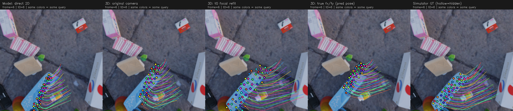
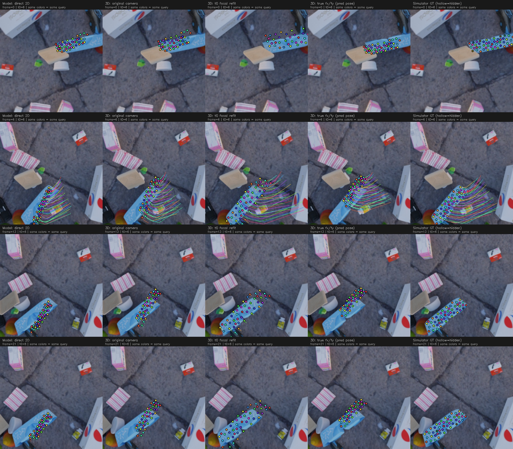

从左到右：模型二维输出 / 原三维回投影 / t0拟合焦距回投影 / 仿真真实焦距回投影 / 仿真真值。
第四列只用真实fx/fy替换预测焦距。三维点、预测相机位置/朝向与主点保持不变。第五列使用完整真实几何和真实相机，因此第四列不保证等于第五列。
源256×256，显示2倍，12fps数据、8fps慢放，t0=6；没有GPU推理或训练，没有强制将输出移回query。


返回18样本焦距对照